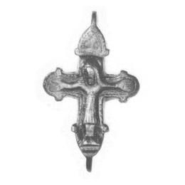
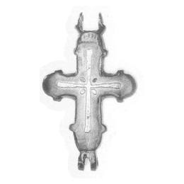

Catalog › CE-0029 · LOV1999-23
Encolpion kievean cu Răstignirea și încrustații de argint
sec. XII (1101–1200) · loc necunoscut · Muzeul Național Maghiar, Budapesta, inv. 1942.5
double-sided reliquary cross (enkolpion), bronz; c. XII (1101–1200); find spot unknown; kept at Muzeul Național Maghiar, Budapesta.




Identificare
- Categorie
- Encolpion bivalv (relicvar)
- Material
- Bronz
- Tehnică
- Turnare în relief; Încrustație
- Dimensiuni
- Î 46 × L 22 mm
Iconografie
- Avers
- Răstignirea (Hristos cu perizoma)
- Descriere avers
- Hristos cu păr lung, mâini mari, perizoma cu falduri verticale, în relief; deasupra capului, literele XCC.
- Descriere revers
- O cruce cu brațe egale în încrustație de argint; la întretăierea brațelor, patru încrustații ovale de argint.
- Inscripții
- XCC
Datare și atribuire
- Datare
- sec. XII (1101–1200)
- Centru
- Rusia Kieveană
Descoperire
- Context
- Colecție (fără context)
- Coordonate
- 47.4913° N, 19.0626° E
- Precizia locului
- Loc de păstrare (loc de descoperire incert)
Păstrare și referințe
- Colecție
- Muzeul Național Maghiar, Budapesta
- Nr. inventar
- 1942.5
- Bibliografie
- Zs. Lovag, Mittelalterliche Bronzegegenstände des Ungarischen Nationalmuseums (Catalogi Musei Nationalis Hungarici, Series Archaeologica III), Budapest, 1999, p. 27, cat. nr. 23, reprodusă la Abb. 23 (planșele, p. 134). Bibliografie citată în sursă: Lovag 1971, 161, Fig. 7/1.
- Figura
- Abb. 23
- Planșe
- Lovag 1999, planșele, p. 134
- Observații
- Datare după Lovag: sec. XII. XII. Intrat în muzeu prin cumpărare. Se spune („angeblich”) că a fost găsit în Rusia, în timpul celui de-al Doilea Război Mondial, sub ruinele unui muzeu. Câte un nod ieșit în fața capetelor rotunjite ale brațelor; chenar crestat oblic. Locul descoperirii nu e cunoscut cu precizie; punctul de pe hartă marchează locul de păstrare (Muzeul Național Maghiar), nu locul descoperirii. Coordonate: nu sunt date în sursă.
Citare: Corpus Encolpiorum, CE-0029, Encolpion kievean cu Răstignirea și încrustații de argint, --root/piese/LOV1999-23/ (accesat 2026-10-20).